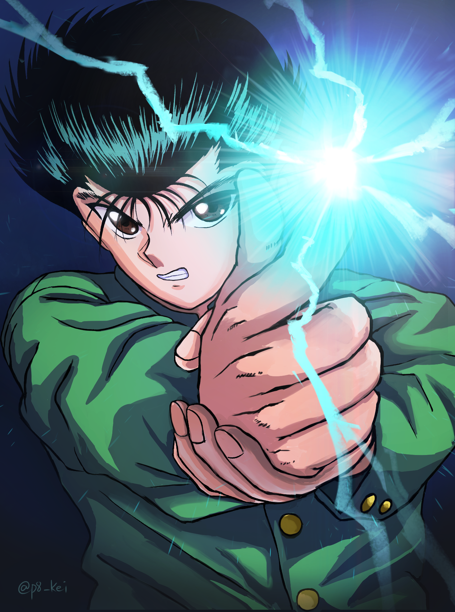

<ion-app>
  <ion-split-pane contentId="main-content">
    <ion-menu contentId="main-content" type="overlay">

      <ion-content>
        <div class="menu-header-bg"></div>
        <div class="header-content">
          
          <ion-label>
            <h2>Kit Harington</h2>
          </ion-label>
        </div>
        <!-- Botão de perfil -->
        <div class="action-button">
          <ion-button>
            <ion-icon slot="start" name="person"></ion-icon>
            Perfil
          </ion-button>
        </div>

        <!-- Comandos -->
        <ion-menu-toggle auto-hide="false">
          <ion-list class="menu-items" lines="none">
            <ion-item routerLinkActive="active">
              <ion-icon name="pie-chart-outline"></ion-icon>
              <ion-label routerLink="/home">Inicio</ion-label>
            </ion-item>
            <ion-item routerLinkActive="active">
              <ion-icon name="library"></ion-icon>
              <ion-label routerLink="/sel-equipamento">Livros</ion-label>
            </ion-item>
            <ion-item>
              <ion-icon name="people-circle"></ion-icon>
              Autores
            </ion-item>
            <ion-item>
              <ion-icon name="chatbubble-ellipses-outline"></ion-icon>
              Mensagens
            </ion-item>
            <ion-item>
              <ion-icon name="exit-outline"></ion-icon>
              Sign out
            </ion-item>
          </ion-list>
        </ion-menu-toggle>
      </ion-content>

    </ion-menu>
    <ion-router-outlet id="main-content"></ion-router-outlet>
  </ion-split-pane>
</ion-app>